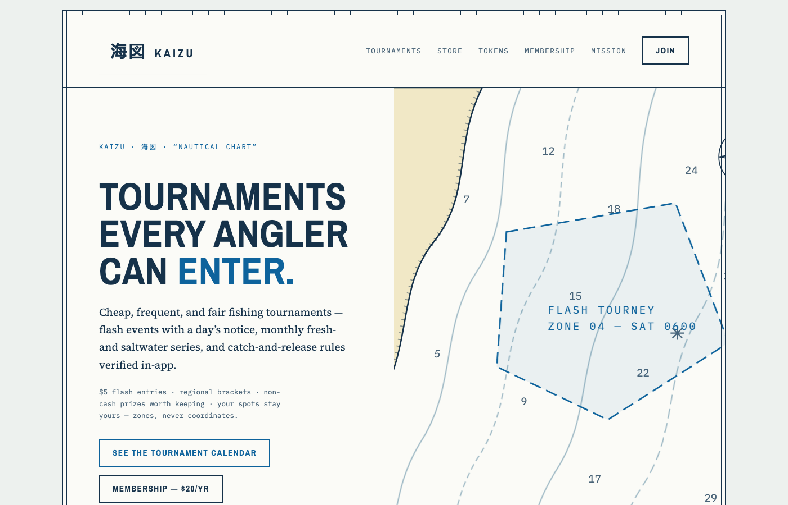
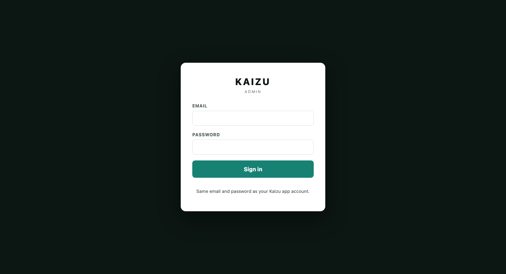
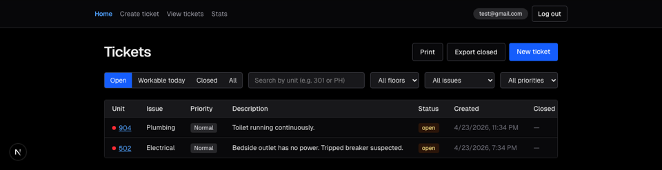
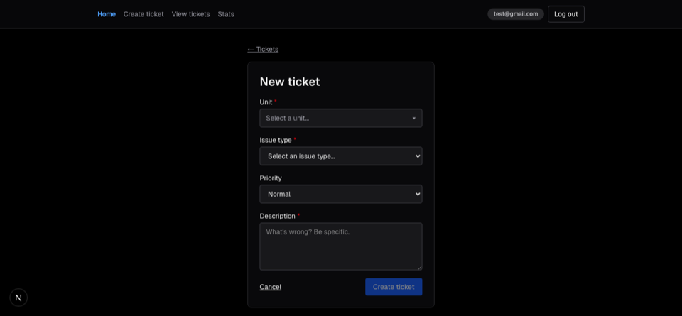

I started in computer science at Tidewater Community College and transferred to Old Dominion as a full time student to finish in cybersecurity.
I work part time as a maintenance technician at a timeshare resort: appliance repair, pool chemistry and equipment, and general facilities work across occupied units.
Before this I spent about three years at L.L.Bean in sales and a year and a half washing dishes.
Away from work I fish the Sandbridge surf and the local piers, hike, play Guitar/Violin and I work on cars.
Projects
Every project here came out of a problem I ran into in the past, as well as some coursework projects.
Kaizu
Built and closed out
A fishing app built as three connected products: a mobile app, an internal admin dashboard, and a public site selling paid memberships.
The mobile app handled sign-in, catch logging, species records, trip grouping, and a social feed, running on real iPhone hardware through TestFlight. The dashboard ran on role based permissions, so moderators could manage tournaments and merch drops while revenue and staff management stayed owner only. The website took subscriptions through Stripe and sold memberships outside the app store.
I shut it down it after reading the market. The category is crowded and the incumbent has hardware integrations I could not match. The architecture stands and I learned more building it than I would have finishing it.

The public site

The admin dashboard
React Native (Expo), Next.js, Supabase (Postgres, auth, storage), Stripe subscriptions and webhooks, Vercel, Cloudflare DNS and email routing, local Xcode builds
Maintenance ticketing
Running
Maintenance at a resort ignores the one constraint that governs the job: you cannot enter an occupied unit. Tickets were getting assigned to rooms nobody could go into.
I built a ticket system along side Ai that checks occupancy before it routes work, so a tech opens the app to a queue they can actually clear.

Open tickets, filtered by what's workable today

Creating a new ticket
Next.js, Supabase, Vercel
Java coursework
Coursework
Twenty two small Java projects: arrays, classes, exception handling, inheritance, and recursion. Each folder is a standalone IntelliJ project.
2D array exercises
Basic array operations
More array exercises
Discount calculator — if/else and loop practice
Chain reaction game
Employee class — intro to classes
Board game with exception handling
Course and Math class exercises
Course, Math, and Computer Science classes
Exception handling practice
Employee class, variant two
Banking app — deposit, withdraw, loan calculator
Scoreboard program
A small game
Extended board game with exception handling
Student records
Rectangle and shape classes
BMI and course-completion calculator
Array operations — display, double values, sum
Shape inheritance — Rectangle, Triangle, Shape
Recursion — decimal-to-binary conversion
Employee class practice
Java, IntelliJ IDEA
Background
Current
Maintenance Technician, timeshare resort
Appliance repair, pool equipment and chemistry, facilities work across occupied units. Diagnose, repair, document.
Current
B.S. Cybersecurity, Old Dominion University
Enrolled full time.
Prior
Computer Science, Tidewater Community College
Programming and data structures
Prior
Volunteer, TCC Computer Club
Built PCs for students in need, wiped hard drives, and installed Windows and Office on donated computers.
Prior
Sales, L.L.Bean
About three years as a sales rep talking to customers, handling money and organizing clothes.
Skills
Everything here I've used in an app or project I've built.
Building and shipping
Build and deploy working apps using AI assisted development
Supabase backend, Stripe payments, custom domains, live on Vercel
Connecting and integrating third party APIs
Environment variables and secrets across Supabase, Stripe, and Cloudflare
Cloudflare DNS, domains, and email routing
Git and GitHub
Testing on real mobile devices, fixing layout and flow issues
Reading and editing HTML, CSS, and JavaScript to debug and adjust
Maintenance and retail
Appliance and HVAC repair
Pool equipment and chemistry
Basic electrical and low-voltage work
Diagnosing problems from an incomplete description